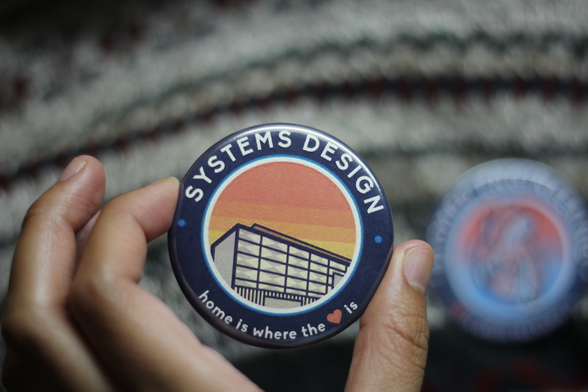
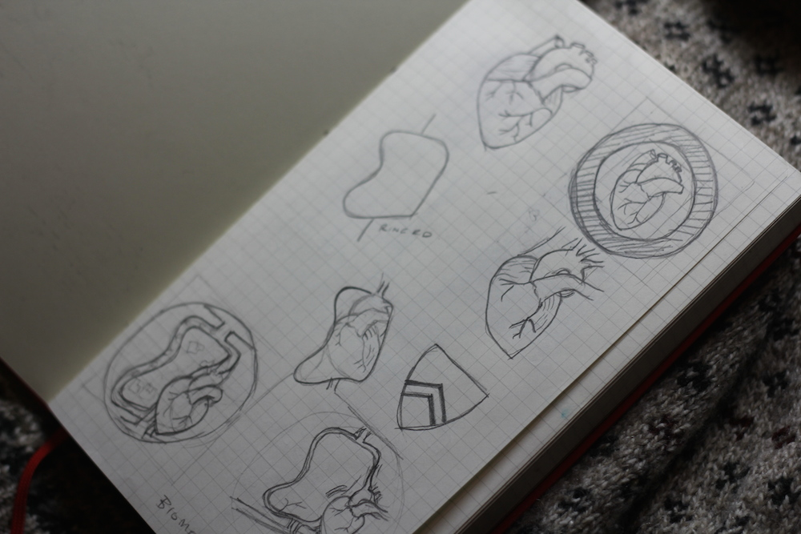
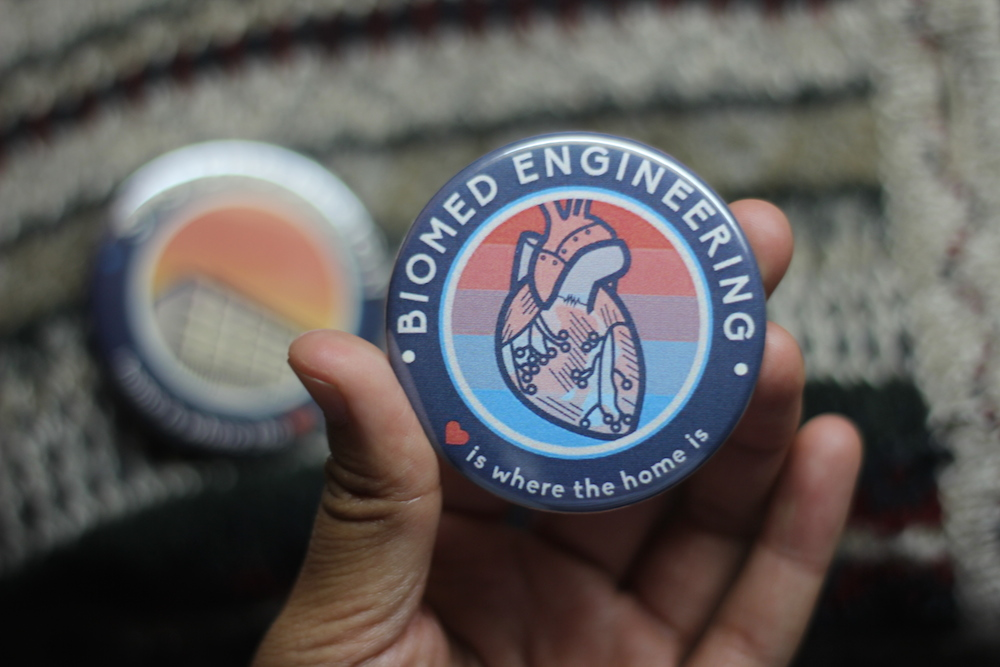

Systems Design Engineering
Role
These were a fun little visual design/illustration project I took on to provide the incoming class of first-year students with a neat little artifact, welcoming them to the family. The illustrations and renderings are original works of mine.
Ideation
The Department of Systems Design Engineering (where I study) welcomed the inaugural class of Biomedical Engineering into the department in the Fall of 2014. We're a tight-knit department and we wanted to make the Biomed class feel like they were a part of the family. As a result, I wanted the two buttons to feel like they were each a part of a cohesive set.
I started with the Systems button, and I thought about what really binds us together as a class. Since Systems is a pretty general discipline, and we don't really focus on any one type of engineering in our studies, it was really hard to find a symbol that unified us all. I made a quick gag iteration of a button that was witty and poked fun at the fact that we all have a really hard time defining our major. My class seemed to enjoy it, but I didn't think the Department would let us print these, and I wasn’t satisfied by their representation of our class.
Something that we did have in common is that we spent all of our time in one building, Engineering 5. It's a place we really call home, and a lot of us spend the majority of our time. We definitely have made a lot of the memories of our undergrad in the building, and it's really a campus landmark. Where we're located on the sixth floor of Engineering 5, we overlook the campus and sunsets wash in from the west-facing windows, and it's really a beautiful thing. I chose a palette for the button that felt solid and warm.

I chose the phrase "home is where the heart is" because I could complement it with "heart is where the home is" for the Biomed guys.
I spent some time altering the shape of the heart in the Biomed button, and trying to form it into the shape of Waterloo's crest, and into the shape of a landmark on Waterloo's campus map. Ultimately, I decided to stick with simplicity and create a line drawing of a heart with circuit components. The palette for the Biomed button is supposed to be cool and sharp, allowing for the transition between the blue and red to represent the colours of blood circulating through the body.

